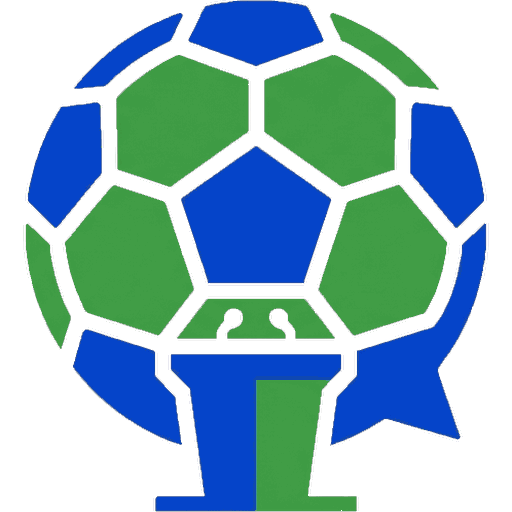

Fanmooton Alexa+Ask about any match, hear what the fans are saying, then post your own take. A real agent, on a real MCP server.
What are fans saying about the derby?
The room is split. Most think the second goal was offside; one fan is blaming the manager.
alexaplus.fanmoot.com